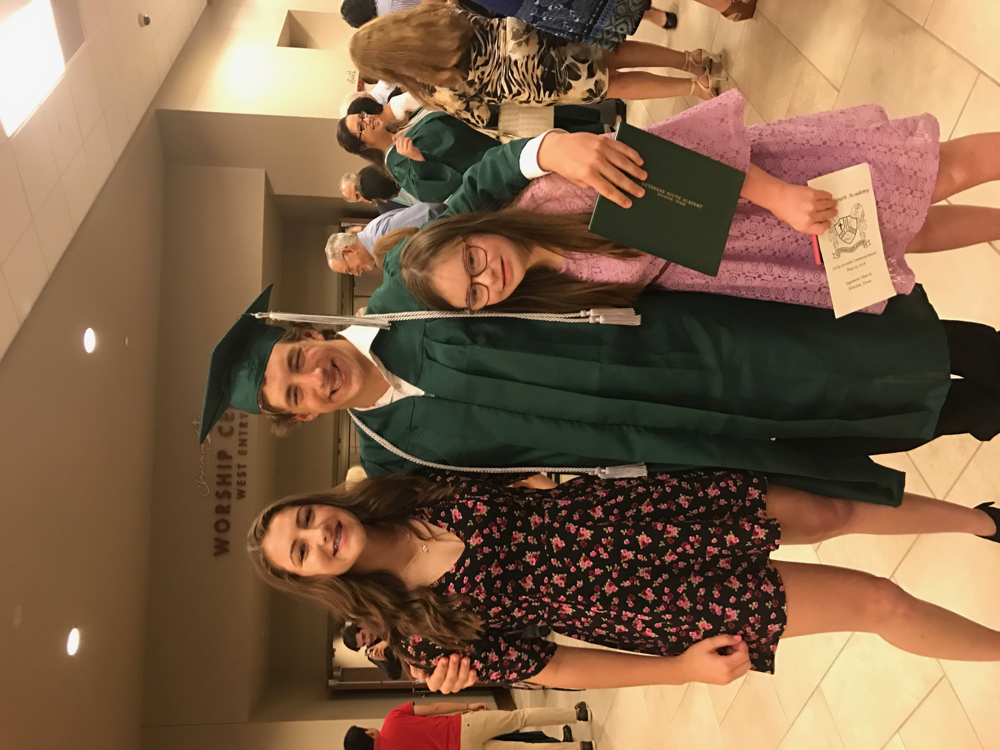
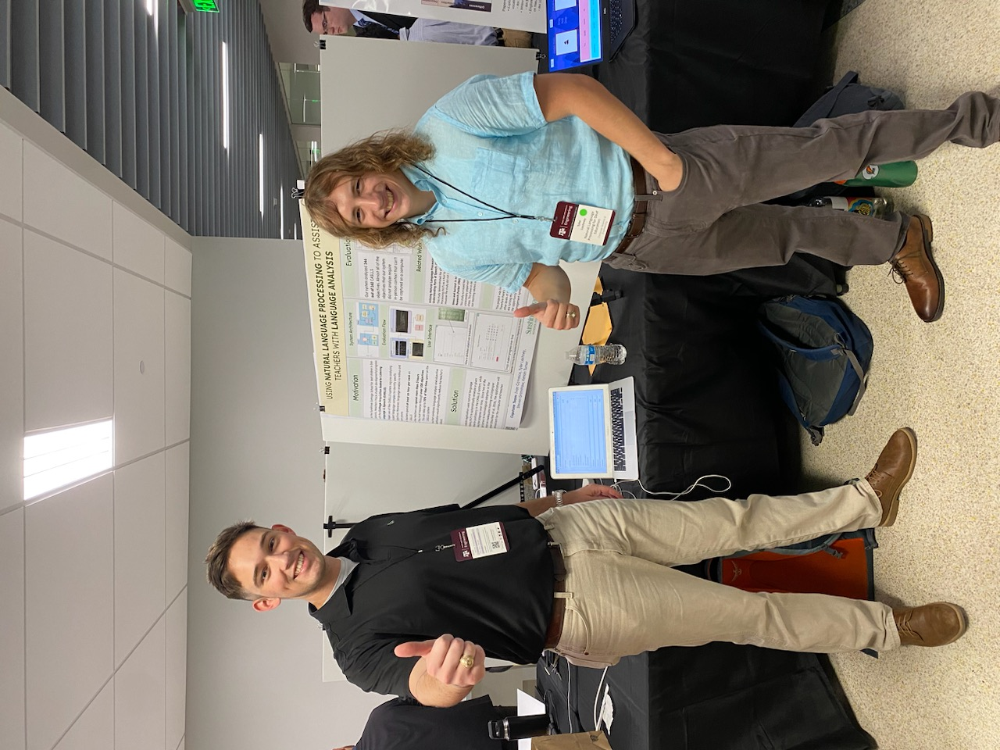
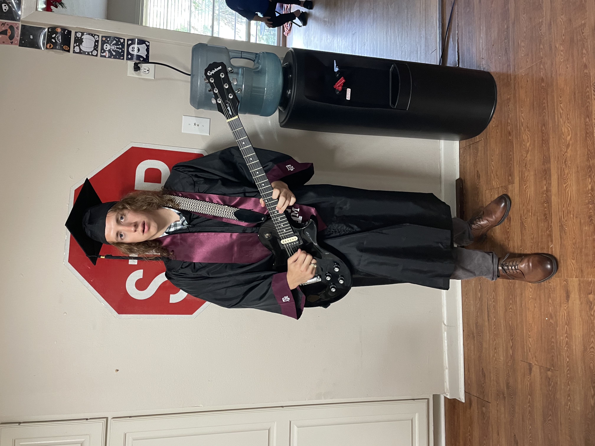

College: Texas A&M University
Gradauated: May 2023
Degree: BS, Computer Science
Unofficial Transcript PDF
Resume PDF
 My sisters and me at my high school graduation in 2018  My teammate Ivan and me at Engineering Project Showcase I graduated high school from Lutheran South Academy in 2018. I was accepted and ready to begin classes at my preferred school Auburn University. However my parents could not afford to send me to Auburn so I had to withdraw from the university mid July. I was determined to attend school in the fall and pursue computer science, so I researched opportunities at Texas A&M and had a meeting with an admissions councilor. The councilor informed me about the Texas A&M engineering academy at Blinn. They were still accepting applications in July and I immediately jumped on that opportunity. With this opportunity I would be co-enrolled at both Texas A&M and Blinn and would take my two freshman engineering classes, ENGR 102 and ENGR 216, with an A&M  Me on the day of my college graduation in 2023 professor and my other classes at Blinn. Being enrolled at A&M also meant that I was not considered a transfer student when doing my Entry To A Major application so I was able to pursue my preferred computer science degree. After my first year of college I was able to fully enroll at A&M and start pursuing major courses. However in 2020 adjusting to online school and tougher course work was difficult for me. Ultimately I was able to graduate in 5 years with a BS in computer science. I am very proud of my education and I take pride in the steps that I made along the way to make myself a better and more productive programmer and student. I am looking forward to the opportunities that my degree will bring me.